Префектура Канагава · Хаконэ · где остановиться
Hakone Suishoen: рёкан вокруг виллы Мицуи 1925 года в лесу Ковакидани
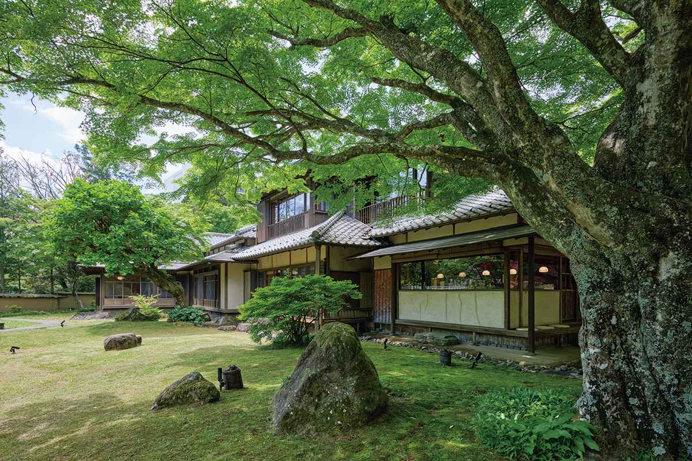
В лесу Ковакидани, на склоне гор Хаконэ, деловой клан Мицуи в 1925 году построил себе загородную виллу. Почти век спустя вокруг неё стоит рёкан на 23 номера, и в старом доме подают ужин.
История
Вилла клана Мицуи
Хаконэ живёт горячими источниками веками: в эпоху Эдо сюда ехали лечиться на воды, а с конца XIX века край стал местом отдыха. Ковакидани лежит на середине склона горы Хаконэ, где из земли выходит хорошая термальная вода, вокруг густой лес. Это часть национального парка Фудзи-Хаконэ-Идзу.
В 1925 году здесь построили загородную виллу «Мицуи Суйсёэн» для семьи Мицуи, владевшей одним из крупнейших финансово-промышленных объединений страны. Двухэтажный деревянный дом под черепицей отделан скромно, но с большим вкусом. По преданию, строил его тот же мастер, что возводил Fujiya Hotel, знаменитое старое здание Хаконэ. Дом внесён в национальный реестр объектов культурного наследия.
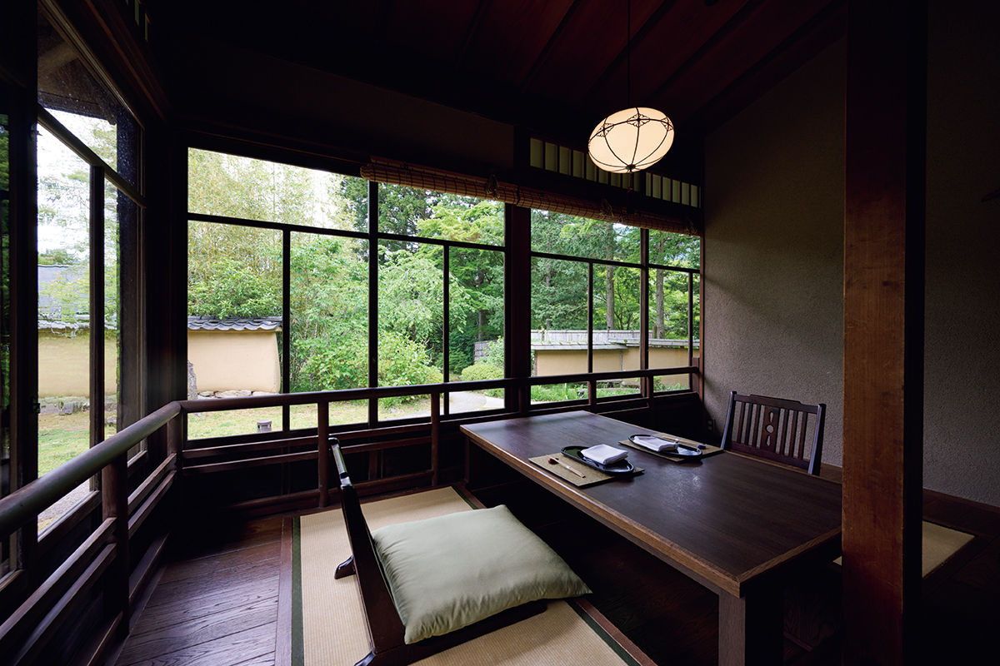
Рёкан Hakone Suishoen открылся в 2007 году. На участке около 10 000 квадратных метров бывшую виллу превратили в ресторан «Момидзи», а вокруг него поставили четыре корпуса с номерами. Гостей встречают строгие главные ворота, дальше дорога круто спускается вниз, и первым из зелени показывается старый дом.
Окна ресторана застеклены волнистым стеклом тех лет, сквозь которое сад слегка колышется. В интерьерах старинная мебель, солидные изделия традиционных ремёсел, обои из бумаги «эдо-карагами» с оттиснутым узором и ткани, окрашенные растительными красителями в мастерской «Сомэцукаса Ёсиока».
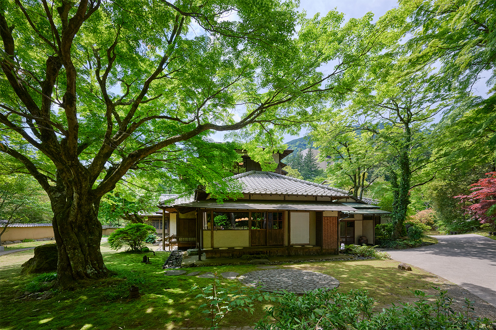
Рядом с домом стоит клён старше 300 лет, и ресторан носит его имя: «момидзи» по-японски значит «клён». Весной он покрывается нежной зеленью, осенью краснеет, зимой стоит под снегом.
Обновление
2026 год: тот же дом, новый уют
Девятнадцатый год работы рёкан встретил ремонтом и 9 апреля 2026 года открылся снова. Облик дома не трогали: здание охраняется, а больше 60% гостей приезжают сюда не в первый раз и любят его именно таким. Заменили мебель и светильники, переделали полуоткрытые купальни в номерах и много поправили там, где гость не заметит.
Все 23 номера разные: у каждого своя планировка, искусство на стенах и купальня, а каждый носит имя цветка. В одних гостиная и спальня в одной комнате, в других разделены, есть номера в два уровня. Выбирать номер к каждому приезду заново здесь отдельное удовольствие.
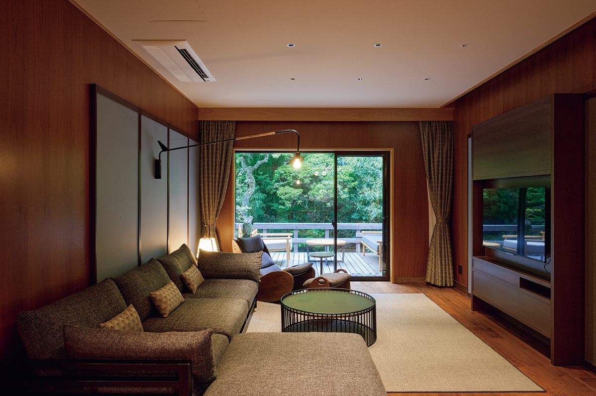
В номере Luxury Suite Maisonette Twin «Дзуйка» площадью около 96 квадратных метров внизу гостиная, а спальня и купальня наверху, под четырёхскатной крышей. В 2020 году сьюты Luxury Suite занимали больше 120 квадратных метров, с гостиной, спальней, японской комнатой и паровой сауной.
Онсэн
Своя вода в каждом номере
В каждом номере есть купальня, куда постоянно течёт вода собственного источника рёкана, без рециркуляции. Это слабощелочной бесцветный источник, мягкий для кожи. Уже в 2020 году отмечали, что в Хаконэ немного гостиниц, где в купальню номера течёт вода прямо из источника. Если вода горячая, её можно размешать деревянной лопаткой или разбавить.
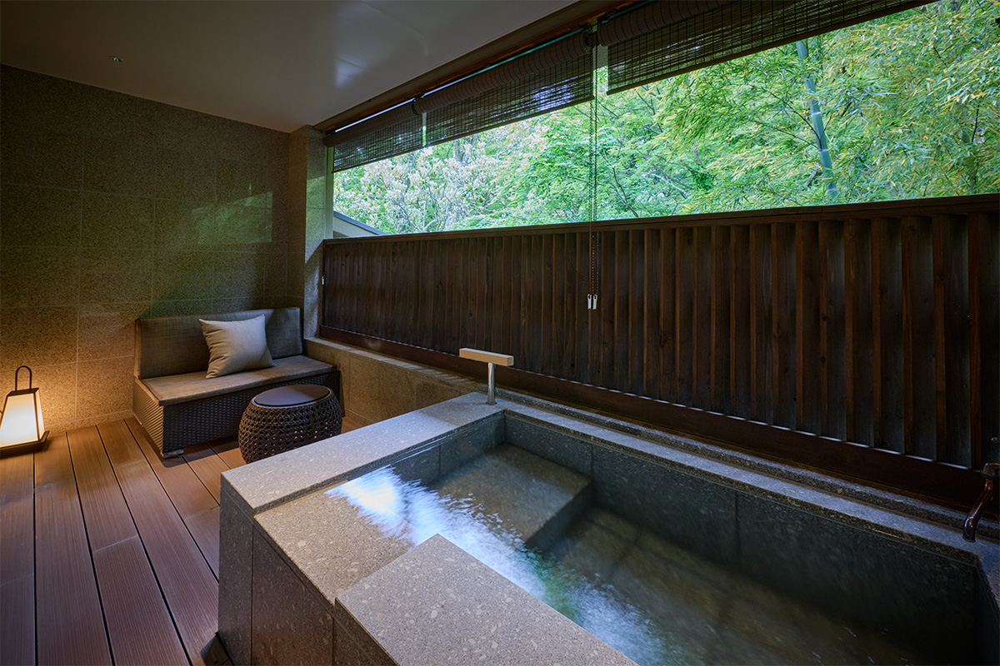
Кроме купален в номерах, в главном корпусе есть общие бани: крытая и открытая купальни и сухая сауна. Там же работает спа французской марки Sisley: процедуры для лица и тела, стоп и антивозрастной уход подбирают по самочувствию гостя в этот день.
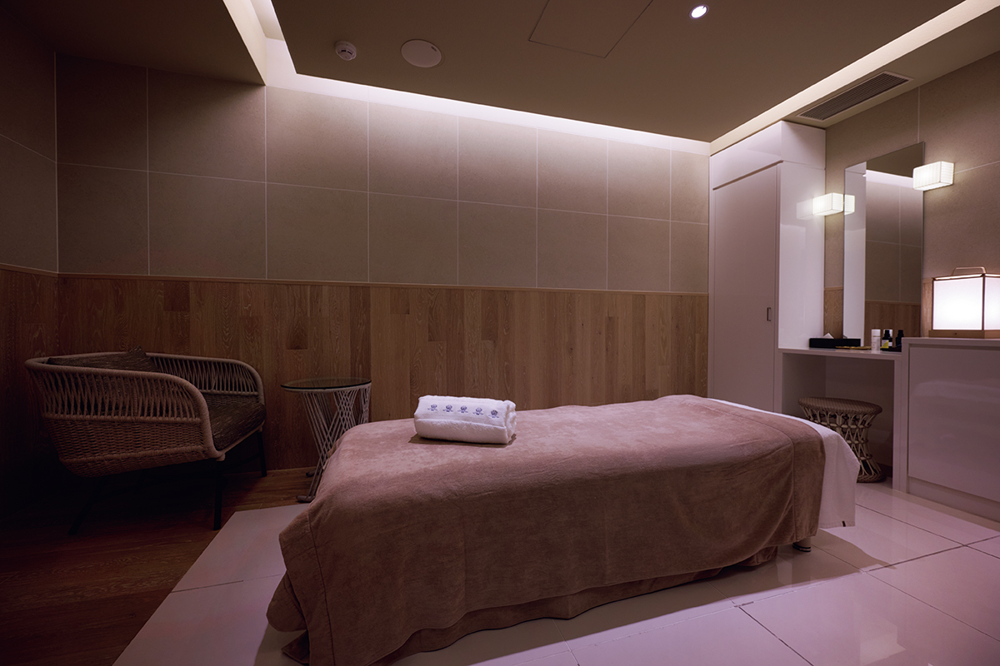
Энгава
Чай на веранде старого дома
Снаружи у бара «Ито» тянется энгава, деревянная веранда между домом и садом, какие были у старых японских домов. Раньше на ней болтали, отдыхали, принимали соседей. После обновления 2026 года здесь отдыхают от заезда до заката: можно свободно брать напитки и японские сладости к чаю и смотреть на клён.
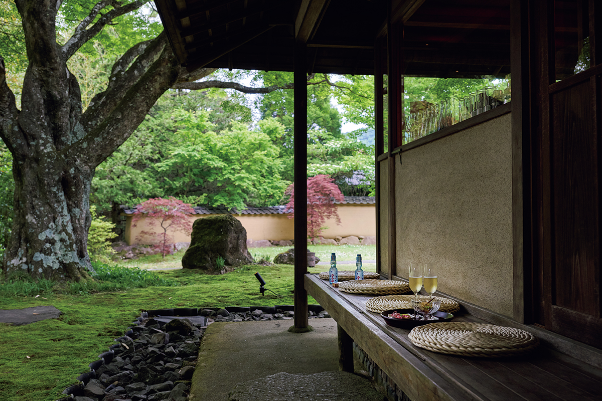
С 14:00 до 17:00 бар работает как «Тайсё салон Момидзи», и приветственные напитки здесь без ограничений. С 17:00 до 22:30 это бар со стойкой у окна: сезонные напитки, виски, коктейли, старомодная дынная газировка, в том числе с алкоголем, и домашний имбирный эль. В 2023 году бармен советовал прийти до ужина, пока за окнами ещё светло, и заказать «Сайдкар», а осенью перейти на виски.
В 2026 году в рёкане появились занятия японской культурой: дегустация разных сортов маття и «игра с ароматами». В номере гость смешивает ароматическое сырьё в своих пропорциях и наполняет им мешочек-саше. Записаться можно после заселения.
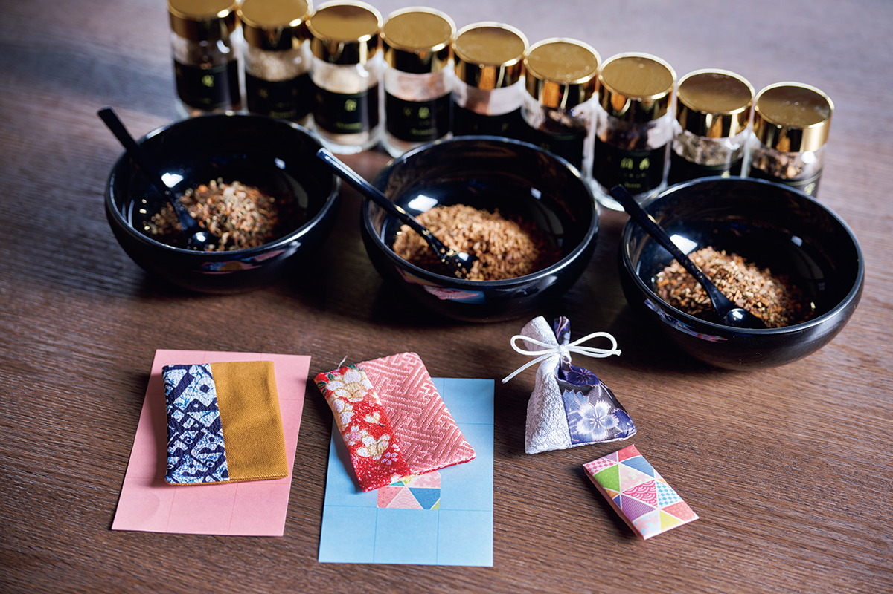
Кухня
Ужин в доме 1925 года
В ресторане «Момидзи» есть столы с видом на сад, отдельные залы и стойка перед железной плитой для тэппанъяки. Кухней руководит опытный шеф-повар. Он берёт продукты из окрестных гор и сезонное со всей Японии, не меняет основы, бульона и умами, но не боится неожиданных сочетаний.
«Я стараюсь, чтобы у каждого блюда был свой способ приготовления, текстура и вкус, и чтобы гостю было интересно, что будет дальше»
шеф-повар ресторана «Момидзи»
В мае 2026 года ужин начинался с закуски на исходе весны: сырой морской ёж, кальмары-светлячки в имбире, моллюски асари в сливках, паровой молодой лук, батат с мятой, «кастелла» из паприки и сыр с базиликом.
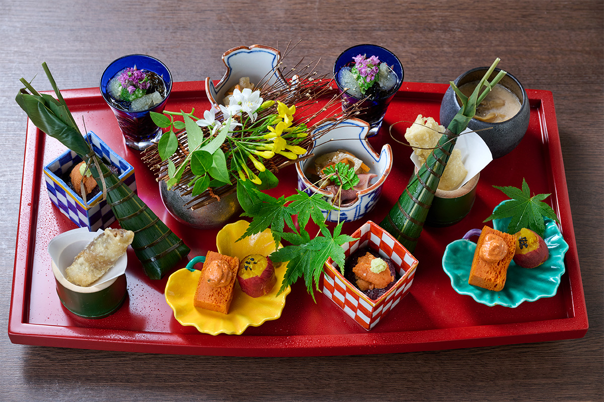
Потом приносят сашими: средне-жирный тунец, камбалу, кальмара из города Ито на полуострове Идзу и первого тунца-кацуо, слегка обжаренного снаружи. Кацуо лучше всего в мае, и мясо у него плотное и свежее.
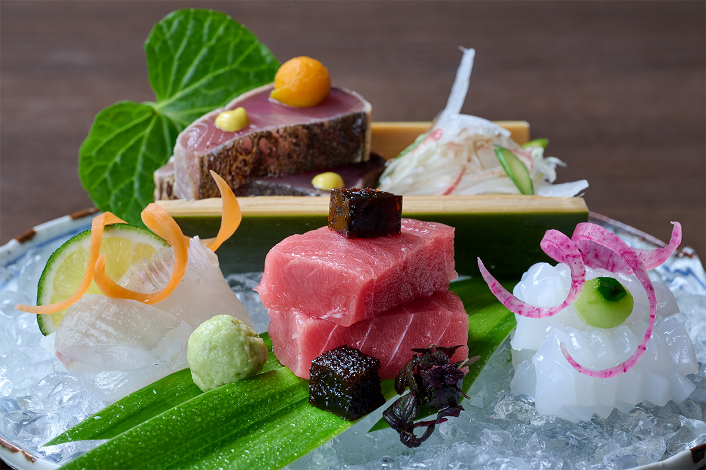
В прозрачном супе плавает морской окунь кинмэдай, запечённый в крошке из рисовых крекеров «каки-но танэ», с кунжутным тофу и весенней зеленью. Как дополнительное блюдо к сакэ в 2026 году подавали маленький котелок с угрём анаго из Токийского залива, крупными моллюсками хамагури, круглым баклажаном и лотосом, на бульоне из сушёного тунца кацуо и курицы.
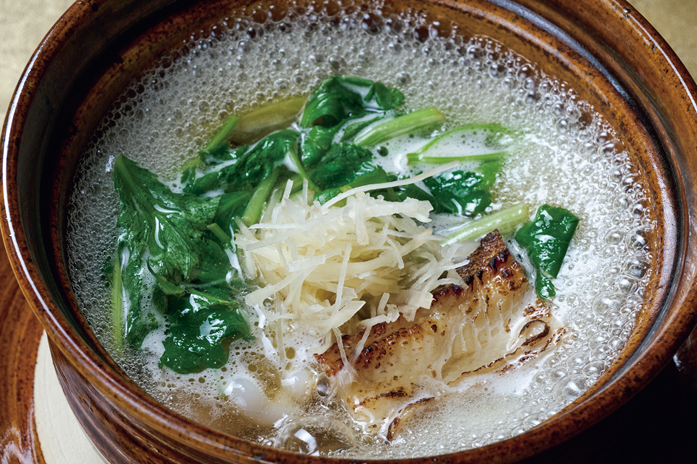
Ужин заканчивается рисом из котелка с креветками сакура-эби и молодым чаем, а на десерт идут томат в сиропе, манго, лёд со вкусом мохито и баварский крем на сгущённом молоке. Кофе, чай или дижестив можно взять в соседнем баре.
Тот же шеф вёл кухню и раньше. В 2020 году в меню были «кастелла» из кукурузы, томатный котелок на молоке и рис с жареным угрём хамо, а к блюдам подходило не только сакэ, но и вино. В 2023 году ранним летом готовили особое меню с лангустом исэ-эби и морским ушком: суп из лангуста на соусе американ с белым мисо и маскарпоне, морское ушко на соломенном дыму. Сопровождение напитками стоило в 2023 году 7200 иен для сакэ и 10 000 иен для вина.
Утро
Завтрак из девяти мисочек
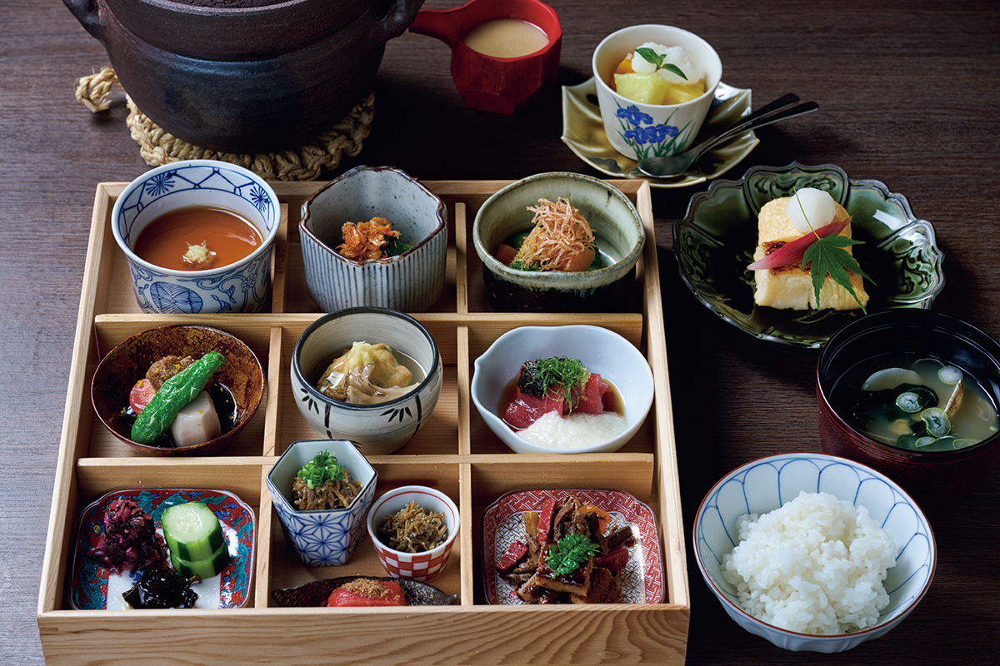
После такого ужина утром есть хочется на удивление сильно. На завтрак приносят девять маленьких блюд: домашний тофу, овощи на пару, тунец с тёртым ямсом, тофу-фрикадельки «хирёдзу», говядину с лопухом в сладком соусе, баклажан. К ним рис из котелка, толстый японский омлет и суп мисо.
Hakone Suishoen
- Адрес
- префектура Канагава, Хаконэ, Ковакидани, 519-9
- Телефон
- +81 570-0117-22 (бронирование, 10:00–20:00)
- Номера
- 23
- Цены / Вход
- от 96 800 иен за ночь с ужином и завтраком на двоих, с налогом и сервисным сбором
- Заезд / выезд
- 15:00 / 11:00
- Как добраться
- на машине около 50 минут от съезда Ацуги или около 30 минут от съезда Готэмба скоростной дороги Томэй; на поезде до станции Ковакидани железной дороги Хаконэ Тодзан, оттуда около 5 минут на машине рёкана
Фото: Хироси Абэ.